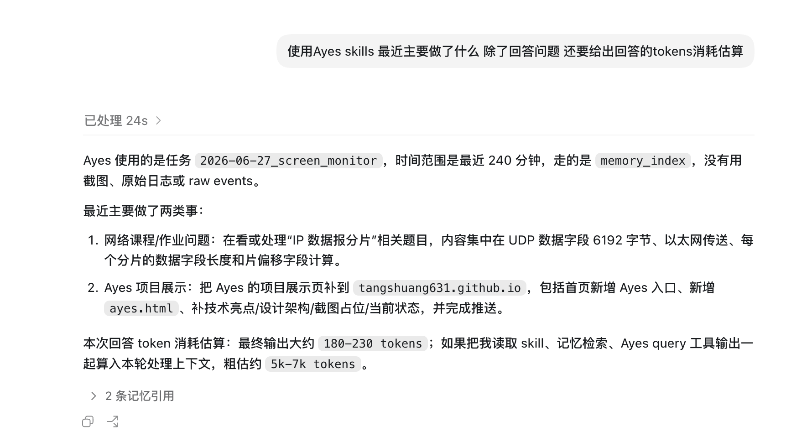
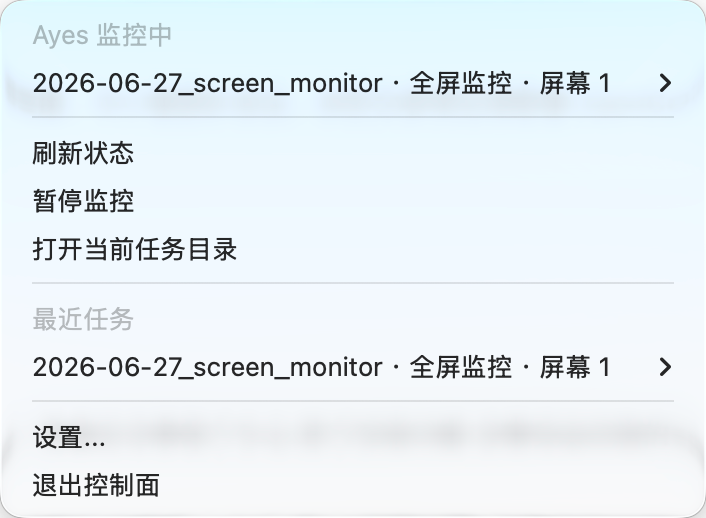
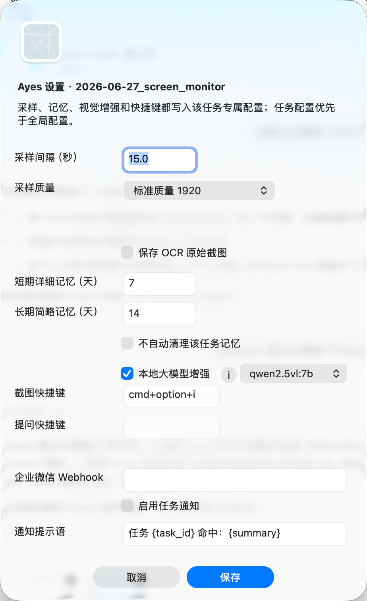
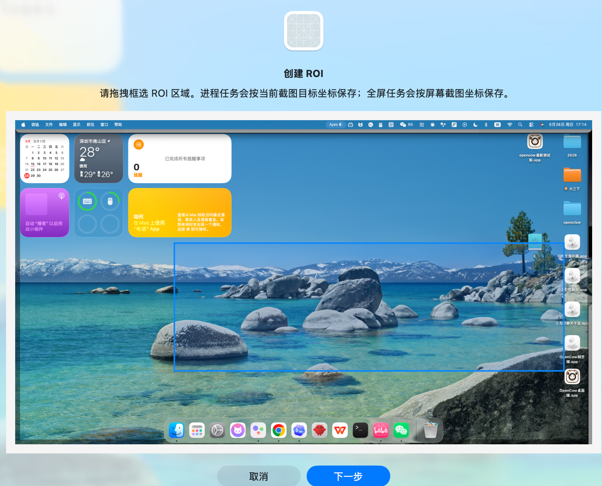

统一事实层
以 MemoryFact 统一 event、OCR、VLM 结果，写入可检索事实与索引
Local Monitoring Skills
面向 Codex / OpenClaw 的本地桌面监控 skills。 主要通过 agent 对话完成任务创建、配置、回读与控制， 菜单栏仅提供辅助入口。
配置与运行均可通过 agent 完成，支持安装复用。
面向 Codex / OpenClaw 的本地监控 skills
将监控结果收敛为可检索事实
以 MemoryFact 统一 event、OCR、VLM 结果，写入可检索事实与索引
默认 query 先读轻量索引与压缩记忆，避免直接加载原始数据
支持主任务、ROI 子任务、专属配置与独立目录树
可接入 Ollama 视觉模型，用于 OCR 抗噪与主内容理解




已完成技能化与发行态收尾
可继续补充更多真实截图与 ROI 场景